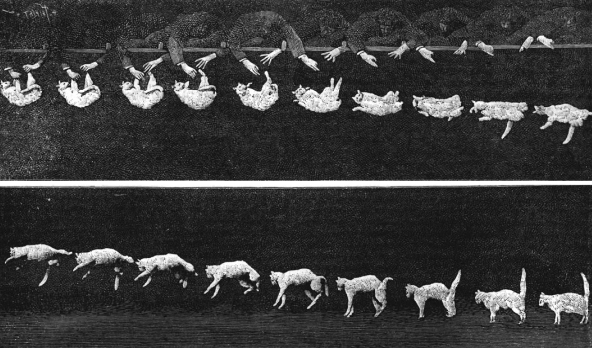

Refleks meluruskan adalah kemampuan yang dimiliki oleh kucing untuk mengarahkan tubuhnya ketika jatuh dengan benar. Kemampuan ini akan dimilikioleh kucing ketika berumur 3-4 minggu, dan akan sempurna ketika berumur 7 minggu. Kemampuan ini dapat dilakukan oleh kucing karena kucing memiliki tulang punggung yang sangat fleksibel dan memiliki tulang selangka yang fungsional.